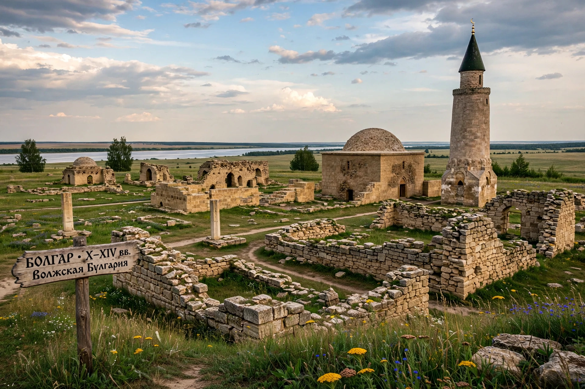

Bolghar (also Bolgar, Bulgar) was the capital of Volga Bulgaria from the 8th to 15th centuries, on the Volga River in present-day Tatarstan, Russia, near the modern town of Bolgar.
| Bolghar | |
|---|---|
 | |
| Location | Tatarstan, Russia |
| Founded | 8th century |
| Status | UNESCO World Heritage Site (2014) |
Bolghar was a major trading centre between Rus', Scandinavia, Central Asia and the Islamic world, dealing in furs, grain, slaves and crafts. Ibn Fadlan visited in 922 when Volga Bulgaria adopted Islam.
The city was destroyed by the Mongols in 1236, rebuilt as part of the Golden Horde, flourished again with stone mosques, mausolea and baths, then declined after Timur's raids and Russian conquest of Kazan.
The Bolgar Historical and Archaeological Complex preserves the Cathedral Mosque, minarets, Khan's mausoleum and other remains, and is a pilgrimage site for Tatar Muslims.